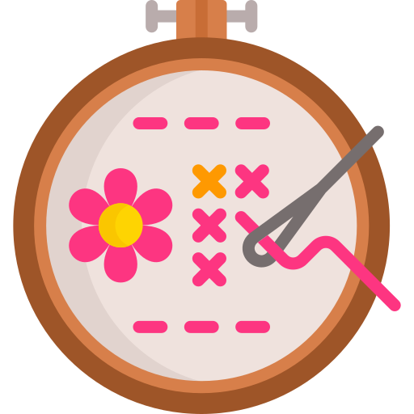
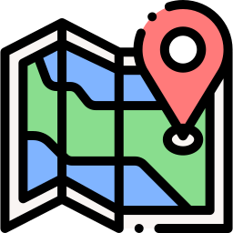

Videojocs
M'apassionen els videojocs que repten la ment i exigeixen resoldre puzles o enginys complexos, com Zelda o Professor Layton. Acostumo a jugar-hi en el per divertir-me i exercitar la ment al mateix temps
Em dic Judit Coll
Estudiant de Desenvolupament d'Aplicacions Web (DAW) amb interès per UI/UX i aprenent a gestionar projectes amb Git i Github.
M'apassionen els videojocs que repten la ment i exigeixen resoldre puzles o enginys complexos, com Zelda o Professor Layton. Acostumo a jugar-hi en el per divertir-me i exercitar la ment al mateix temps
Em reconforta dedicar temps a brodar a punt de creu a casa. És una activitat creativa i relaxant que permet desconnectar de les pantalles, sobretot en dies de pluja


M'encanta sortir a explorar la natura i la ciutat buscant "tresors" amagats mitjançant el GPS del mòbil. És la combinació perfecta entre tecnologia, aventura i activitat a l'aire lliure